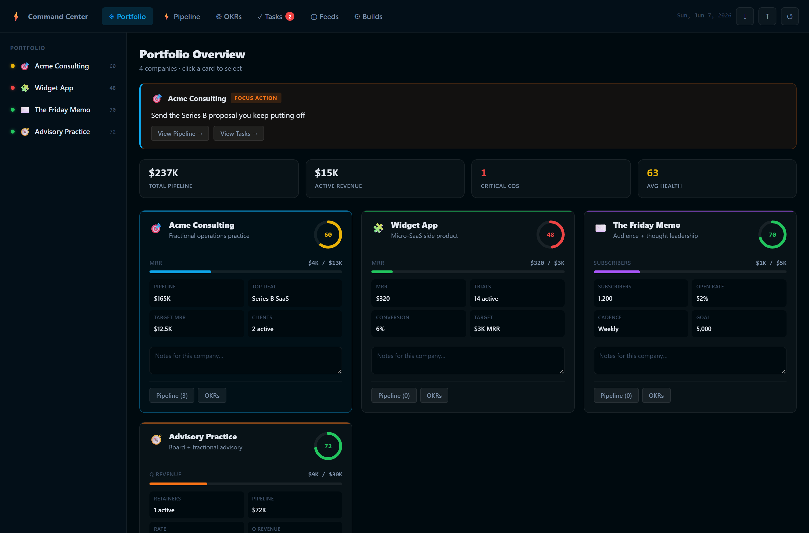
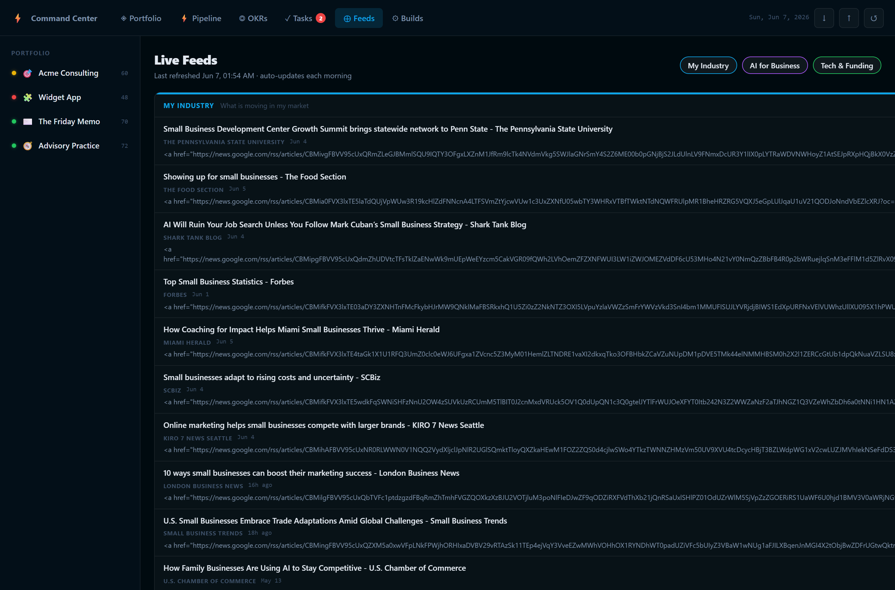
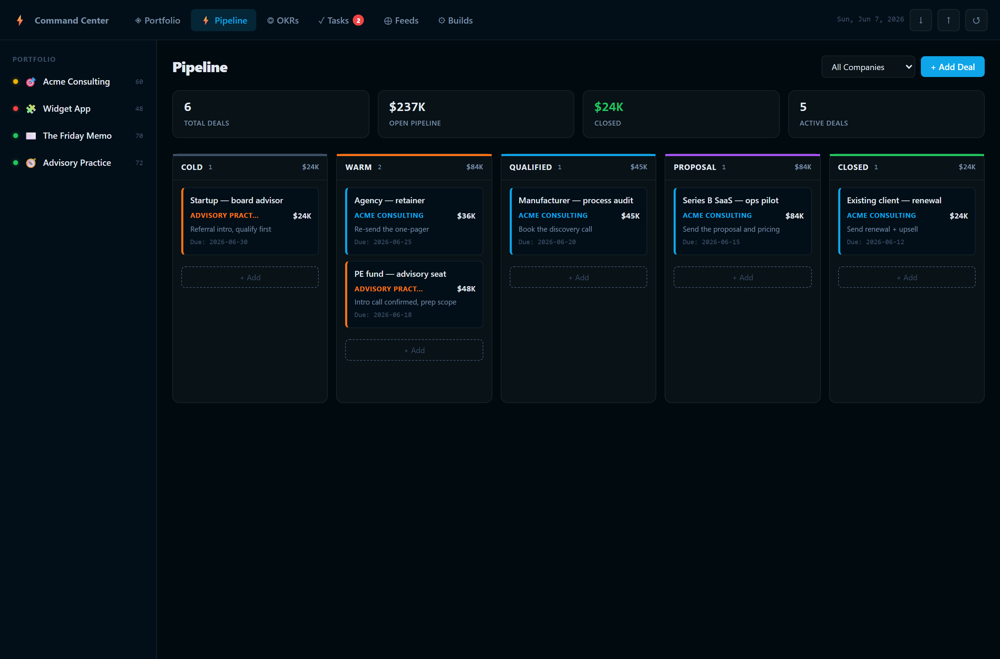
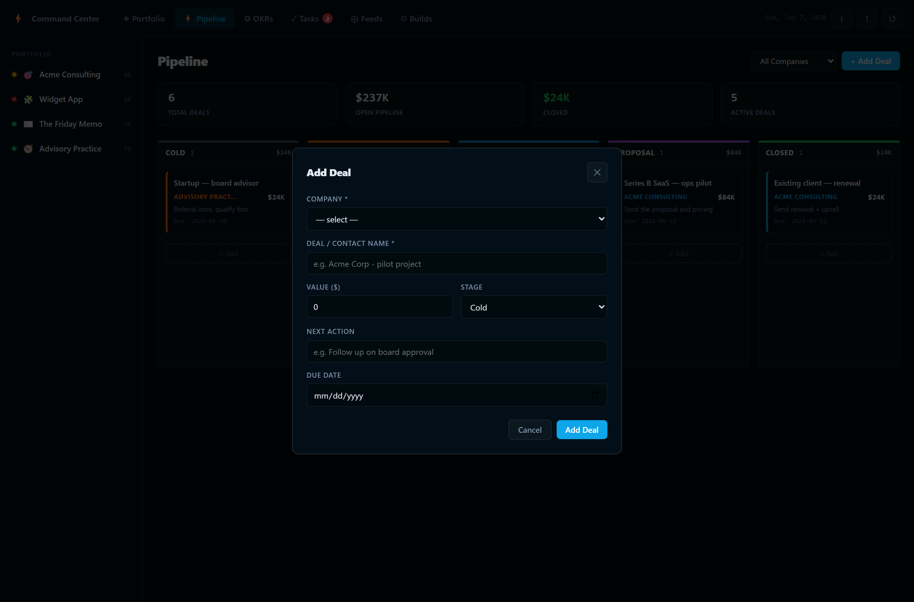
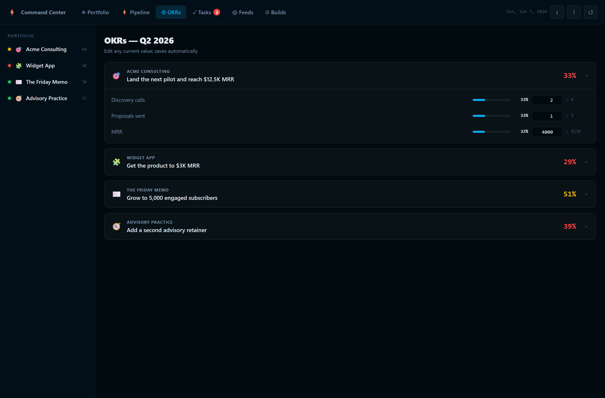
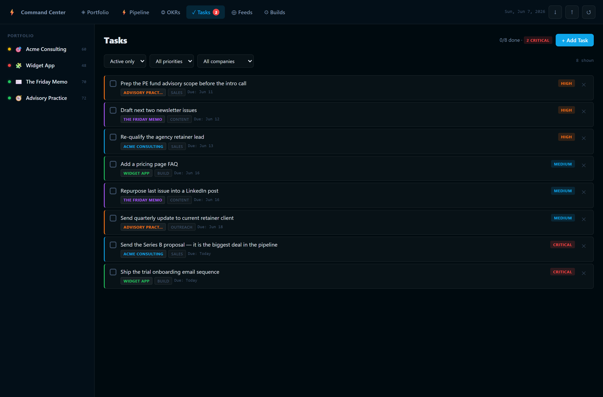

A Command Center: a single place to run your business, plus an engine that keeps it current and reports to you every morning. It is plain files in one folder, which is exactly why it is portable, ownable and teachable.
It has three things you can see and touch:
| Track | Who | Builds | Time |
|---|---|---|---|
| No-Code | Non-technical | The same system in a spreadsheet + a daily reminder | 90 min |
| Low-Code | Can copy-paste | The dashboard + a script you run by hand | 1 weekend |
| Full-Code | Builders | The complete app: data, feeds, brief, auto-email, scheduler | 2 weekends |
This guide teaches the Full-Code build in full, then gives a complete No-Code spreadsheet track so a non-technical reader finishes with a working Command Center too.
Build it once. Change one file to make it yours. From then on it runs while you sleep and the only daily habit is reading a two-minute email.
Every Command Center has the same five parts. Learn these names and you can teach the whole system.
SOURCE OF TRUTH ──► ENGINE ──► data.js ──► index.html
scripts/data.mjs (gather + (snapshot) (dashboard)
compose)
│
└──► EMAIL BRIEF (your inbox)
Offline-first, push-second. The thing you open must never depend on a server running. The dashboard is a static file that opens with a double-click and works with the internet off. The engine is separate and only needs to run once a day. If the engine fails one morning, yesterday's dashboard still opens. Reliability is the first feature.
Prerequisites: Node.js 20+, a code editor, a terminal, and (for email) a Gmail account where you can make an app password. You need to read code, not write much.
mkdir command-center cd command-center npm init -y mkdir scripts ; mkdir setup
package.json (the five things you will run):
"scripts": {
"refresh": "node scripts/build-data.mjs",
"brief": "node scripts/daily-brief.mjs",
"brief:dry": "node scripts/daily-brief.mjs --no-email",
"verify-email": "node scripts/daily-brief.mjs --verify",
"open": "start index.html"
}npm install nodemailerThis is the only file you edit day to day. It holds your companies or projects, pipeline, goals, tasks and the list of feeds you follow. Everything else reads from it. To rebuild this app for any business, you change this one file.
// scripts/data.mjs export const COMPANIES = [{ id: 'acme', // short, lowercase, never changes name: 'Acme Consulting', emoji: '🎯', color: '#0ea5e9', health: 60, // 0-100, your honest gut score revenueLabel: 'MRR', revenueCurrent: 0, revenueTarget: 12500, pipelineValue: 84000, focusAction: 'Send the proposal you keep dodging', kpis: [{ label: 'Pipeline', value: '$84K' }], notes: '', }] export const PIPELINE_DEALS_DEFAULT = [{ id: 'd1', company: 'acme', name: 'Series B pilot', value: 84000, stage: 'qualified', nextAction: 'Book discovery call', dueDate: '2026-06-15' }] export const TASKS_DEFAULT = [{ id: 't1', priority: 'critical', company: 'acme', title: 'Send the proposal', category: 'Sales', done: false, dueISO: '2026-06-09' }] // ...OKRS_DEFAULT, STAGES, FEED_SOURCES, BUILD_STATUS (see Appendix C)
Use real numbers. Put 0 where something is unpaid or unstarted, never an aspirational figure. A dashboard you trust is one you keep using. A dashboard that flatters you is one you quietly stop opening.
Changing an id later and breaking the deals and tasks that reference it. Rename the display name freely, but leave id alone.
This imports your data, fetches the feeds, reads your notes digest, and writes one file: data.js, which sets window.__CC__ to the whole snapshot. The dashboard reads that.
// scripts/build-data.mjs (essence) export async function buildData({ fetchFeeds = true } = {}) { const feeds = fetchFeeds ? await fetchAllFeeds(FEED_SOURCES) : {} const digest = readLatestDigest() const snapshot = { generatedAt: new Date().toISOString(), companies: COMPANIES, deals: PIPELINE_DEALS_DEFAULT, okrs: OKRS_DEFAULT, tasks: TASKS_DEFAULT, stages: STAGES, feedSources: FEED_SOURCES, feeds, digest } fs.writeFileSync('data.js', 'window.__CC__ = ' + JSON.stringify(snapshot) + ';') }
Editing data.js by hand. Never do that, it is regenerated every morning. Edit data.mjs.
Two tiny files. env.mjs loads your .env credentials and locates the project root. digest.mjs reads the newest Markdown file from a notes folder you point it at (and returns null safely if you do not keep one, so everything still works).
// digest.mjs — newest note from your folder, or null export function readLatestDigest() { if (!fs.existsSync(DIGEST_DIR)) return null const files = fs.readdirSync(DIGEST_DIR).filter(f => f.endsWith('.md')).sort().reverse() return files.length ? { content: fs.readFileSync(...), date: files[0] } : null }
Fetches and parses your news feeds server-side, where there are no browser restrictions. The cleanest source is a Google News RSS search: take https://news.google.com/rss/search?q= and add your terms joined by +.
The Feeds tab then shows everything the last morning run pulled, refreshed daily:

For each candidate feed ask: in the last month, how many items would have changed a decision I made? If the answer is zero, it is noise wearing the costume of news. Keep 3 to 5 sources, no more.
npm run refresh prints feed counts above 0.
AlignedEvery feed ties to a decision you actually make.
A single self-contained HTML file: all styles and JavaScript inline, no dependencies, no CDN. It reads window.__CC__ and renders six tabs. This is what opens by double-click and works offline.




Read-only source, editable overlay. data.js is regenerated every morning, so the dashboard never stores your edits there. Your changes (a task checked, a note typed, a deal edited) live in the browser's localStorage and are merged on top at render time. That is why the morning refresh updates the news without ever erasing your work.
index.html opens it offline.
AlignedIt shows your real business across all six tabs.
LeveragedA five-second glance tells you where today's attention goes.
Turns the snapshot into a ranked morning email. Ordered top to bottom by usefulness so the brief decides what to read first, and you never have to.
// the ranking logic, the part worth teaching const rank = { critical:0, high:1, medium:2, low:3 } const open = tasks.filter(t => !t.done) .sort((a,b) => rank[a.priority]-rank[b.priority] || a.dueISO.localeCompare(b.dueISO)) const top3 = open.filter(t => t.priority==='critical'||t.priority==='high').slice(0,3)
A brief that lists fifteen "priorities" teaches you to dread it. Three real moves, ranked. The rest is reference, not obligation.
email.mjs sends through Gmail with nodemailer. daily-brief.mjs wires the whole morning run into one command: refresh data, compose, send.
myaccount.google.com/apppasswords (16 characters)..env and add .env to .gitignore:
GMAIL_USER=you@gmail.com GMAIL_APP_PASSWORD=xxxxxxxxxxxxxxxx BRIEF_TO=you@gmail.com
npm run verify-email → npm run brief:dry → npm run briefNever use your normal login password, only an app password. Never commit .env. This is the one credential the builder must create themselves.
Register a task that runs node scripts/daily-brief.mjs at the time you choose. On Windows, Task Scheduler. On Mac or Linux, cron.
# the trigger: which days, what time
$Trigger = New-ScheduledTaskTrigger -Weekly `
-DaysOfWeek Sunday,Monday,Tuesday,Wednesday,Thursday,Friday -At 7:00AM
Drop a day from -DaysOfWeek to skip it. Change -At for the time. Install, then test instantly:
powershell -ExecutionPolicy Bypass -File setup\install-scheduler.ps1 Start-ScheduledTask -TaskName CommandCenter-MorningBrief
crontab -e then 0 7 * * 0-5 cd /path/to/command-center && node scripts/daily-brief.mjs. Same script, different scheduler.
Nothing to build. This is how you operate it, and the habit that makes it pay off.
Upkeep: weekly, update health scores and goals, retire one weak feed and add one. When the business changes, edit data.mjs and run npm run refresh. Back up your edits with the dashboard's export button now and then.
Not everyone will run Node. The same system works in a spreadsheet, and a non-technical reader can finish in about 90 minutes. The companion file Command-Center-NoCode-Template.xlsx ships with this guide, prebuilt with every tab and the summary dashboard below.
| Tab | What goes in it | Maps to |
|---|---|---|
| Companies | One row per company/project: name, health (0-100), revenue now, target, focus action | Source of Truth |
| Pipeline | One row per deal: company, name, value, stage, next action, due date | Source of Truth |
| Goals | One row per key result: company, label, current, target | Source of Truth |
| Tasks | One row per task: priority, company, title, due date, done | Source of Truth |
| Feeds | The 3-5 sources you follow, with the decision each informs | Intelligence Layer |
| Dashboard | An auto-summary tab: totals, health colors, today's top tasks | Surface |
SUMIF to total pipeline by company and COUNTIF to count open critical tasks. That tab is your dashboard. Pin it as a browser tab.The spreadsheet is not a lesser version, it is the on-ramp. When a reader outgrows it (wants the auto-email, the live feeds, the offline app) the columns map one-to-one onto data.mjs. Nothing is wasted. They graduate from No-Code to Full-Code by copying their rows into the data file.
| Session | Covers | They leave with |
|---|---|---|
| 1 | Parts 1-3 + Module 1 | Their data.mjs (or spreadsheet) with their real business |
| 2 | Modules 2-5 | A working offline dashboard showing their data and live feeds |
| 3 | Modules 6-7 | A brief emailed to themselves |
| 4 | Modules 8-9 | An automated daily brief + a 7-day ritual plan |
| Level | Evidence |
|---|---|
| Functional | It runs |
| Aligned | It holds their real business data |
| Leveraged | They would miss it if it broke |
| Transferable | They can teach it to someone else |
| Tier | Offer |
|---|---|
| Free / regular reader | Parts 1-3 + Module 1, the No-Code spreadsheet |
| Premium reader | This full field guide + the reference files |
| Student / cohort | The 4-session course with feedback |
| 1-on-1 | You build their Command Center with them, around their business |
npm run refresh Rebuild data.js (feeds + digest). No email. npm run brief Full run: refresh + email the brief. npm run brief:dry Full run, print the brief, send nothing. npm run verify-email Check email credentials. npm run open Open the dashboard.
COMPANY: { id, name, emoji, color, health(0-100), revenueLabel,
revenueCurrent, revenueTarget, pipelineValue, focusAction, kpis[], notes }
DEAL: { id, company, name, value, stage, nextAction, dueDate(YYYY-MM-DD) }
OKR: { company, objective, krs:[{ label, current, target, format? }] }
TASK: { id, priority(critical|high|medium|low), company, title,
category, done, dueISO(YYYY-MM-DD) }
STAGE: { key, label, color }
FEED: { id, label, color, url, description }
| Symptom | Fix |
|---|---|
| Dashboard says "run npm run refresh" | data.js does not exist yet. Run it. |
| Feeds show 0 or an error | URL blocked or wrong. Use a Google News RSS search URL; encode spaces as +. |
| verify-email auth error | You used your login password. Create an app password. |
| Edits disappeared after refresh | You edited data.js by hand. Edit data.mjs instead. |
1. My "companies" are really: ____ (service lines / clients / products) 2. My pipeline stages are: ____ 3. My 3-5 feeds (+ the decision each informs): ____ 4. My rest day (no email): ____ 5. The time I want the brief: ____ 6. The one number that says each area is healthy: ____
The screenshots in this guide were captured from the live app with node setup/screenshots.mjs. Re-run it any time the dashboard changes to refresh every figure automatically.